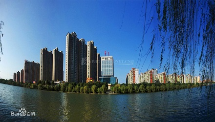
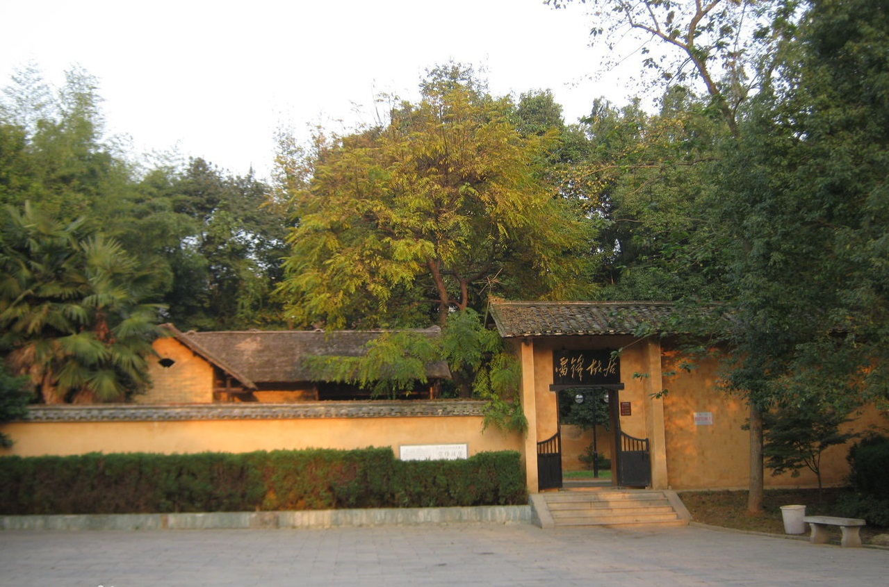
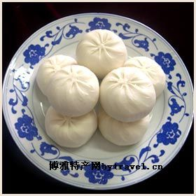
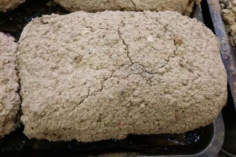

望城区，隶属于湖南省长沙市，是长沙市六个市辖区之一，地处湘中东北部，湘江下游。望城区东临长沙县，南接长沙市开福区、岳麓区，西至宁乡市，西北临益阳市赫山区，北连岳阳市湘阴县、汨罗市，总面积951平方千米，是长沙面积最大的市辖区。截至2016年，共辖5个镇、10个街道，共有125个村民委员会，40个社区居民委员会，总人口57.8万人。
"希望之城"
望城区物产丰富，主产稻谷，盛产鲜鱼，素称“鱼米之乡”。境内地下矿藏已查明的有金、铁、锰、磷、石灰石、花岗岩、玄武岩、陶土等30多种，共有矿产地65处，其中丁字的花岗石质地坚硬，铜官陶土细腻洁白，均久负盛名。区域内植被以亚热带常绿针阔叶林为主，树种资源丰富，自然生长和引进栽培树种70科、274种，竹类7种，主要林木有杉、松、樟、椿、柑橘、楠竹等。望城是伟大的共产主义战士雷锋同志的故乡，被江泽民同志誉为“希望之城”。
靖港古镇
靖港给我的美感在于它生活的节奏，它固执地在紧邻都市的地方保持了自己的时间感：那里的水鸟，总在黄昏的时候沿着固定的线路归巢。那里的木匠午睡醒来总在同一个时间，然后摆开自己的工具，打开他的窗户。那里的豆腐作坊，不用任何钟表，也知道在什么时候开磨最好。然后，开磨的豆香蔓延到整个石板长街。
雷锋故居

雷锋（1940—1962），望城人，1960年参军，积极学习毛泽东著作，多次立功受奖，同年11月加入共产党。1962年8月15日因公殉积，葬于抚顺。1963年3月4日，毛泽东题词“向雷锋同志学习”，全国掀起学习雷锋的热潮。2002年雷锋塑像公布为湖南省重点文物保护单位。
铜官窑
长沙铜官窑兴起于公元8世纪中后期，至公元10世纪五代时期而
衰，距今约有1000多年的历史。长沙铜官窑遗址位于湖南省长沙市望城区丁字镇彩陶源村，是指在唐代潭州（今长沙）石渚湖、铜官一带的瓷器作坊。它是世界釉下彩瓷的发源地，打破了当时只有青瓷和白瓷的格局，被称为“汉文化向外扩张的里程碑”，在世界陶瓷发展史上具有划时代意义。
"望城美食"
"靖港米粉"所用稻米要早稻粒谷米，磨出的粉，细嫩，粘性好，韧度适中，为加工米粉之最佳。米要淘洗得无丝毫泥沙和残留糠皮，干干净净。从前玉春楼、长春阁等靖港知名米粉馆，还有专人挑拣米中无法淘洗掉的谷粒，以确保米粉的洁白无瑕。无了瑕疵的米用清水泡发，掺适量现饭，湿磨成粉，再蒸。蒸有专用的蒸盘，为铝制品，圆底浅边，像是一面锣。湿粉要在盘中敷得厚薄均匀，若坑坑洼洼，蒸成形后会当做次品报废，拿去喂猪。蒸的要求也十分严格，过生则粉皮易碎，过熟则粉皮不嫩。蒸熟后的粉皮还要趁热从蒸盘中一张张揭下来，搭在竹篙上，使其汽水挥发，凝固而不粘。把粉皮切成粉丝则需刀功，先把粉皮卷成条状，一刀刀切下去，每根粉丝皆宽窄一致方为高手，若切得宽窄不一，夹到汤碗里后，外观上首先就打了折扣，而且影响食欲。

"德园包子"选料精细。糖陷用白糖、冰糖、玫瑰糖或桂花糖相拌而成，香甜爽口；肉陷则选用猪前夹缝肉或好瘦肉，拌以香菇、冻油等调料，油而不腻。德园的掌案师傅历来都是技术高超的老师傅，所制包点皮薄陷大、颜色白净、质地松软、富有弹性。

美味"叫化鸡"又称“煨鸡”。系将鸡挖去内脏，放入干贝、开洋、火腿片及适量调味品，用荷叶将鸡包裹，于在外面涂上一层泥，放在火上煨烤。熟后异香扑鼻，鲜嫩酥烂，别有风味。 此鸡皮色金黄橙亮，肉质鲜嫩酥软，香味浓郁，原汁原味，营养丰富，风味独特。